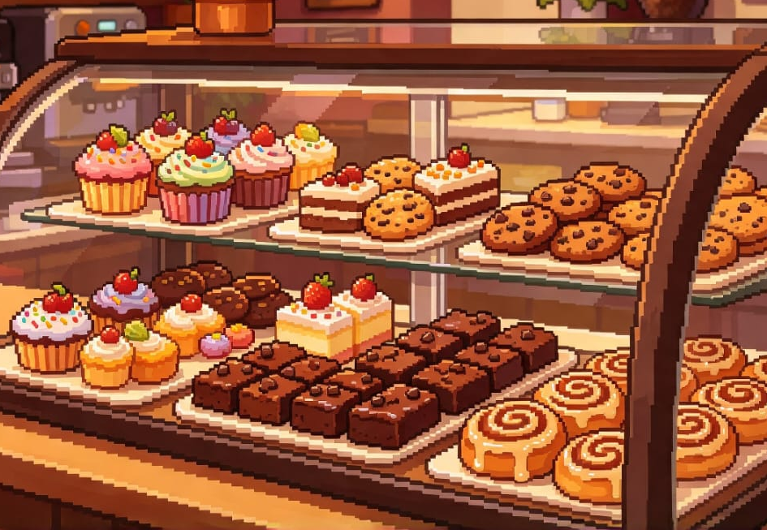

Nossa História
Onde o aroma do café encontra boas conversas.
A Grão & Prosa nasceu do desejo simples de desacelerar o tempo. Mais do que servir cafés especiais, criamos um refúgio acolhedor para leitores, sonhadores e amantes de uma boa prosa.
O Aroma da Tradição
Cada xícara começa na escolha cuidadosa de grãos selecionados de pequenos produtores. Torramos e preparamos cada bebida artesanalmente para despertar memórias afetivas logo no primeiro gole.

Receitas com Afeto
Nossa cozinha funciona no ritmo caseiro: bolos saindo do forno à tarde, suspiros crocantes e salgados folhados que transformam qualquer pausa rápida em um momento especial do seu dia.
Seja para escrever as páginas do seu próximo projeto, colocar a leitura em dia ou simplesmente compartilhar risadas à mesa, há sempre uma cadeira esperando por você na Grão & Prosa.
Sobre este projeto
Site desenvolvido como avaliação somativa de front-end por Jheimily Railayne Kostolivicz Pereira, estudante de Análise e Desenvolvimento de Sistemas na PUCPR, usando apenas HTML, CSS e JavaScript.
- HTML: estrutura semântica (header, nav, main, section, article, form, fieldset).
- CSS: um arquivo global e um por página, com variáveis de cor, Flexbox, Grid e media queries.
- JavaScript: paginação do cardápio, avaliação da equipe, leitura dos dados enviados por GET, menu para celular e máscara de telefone.